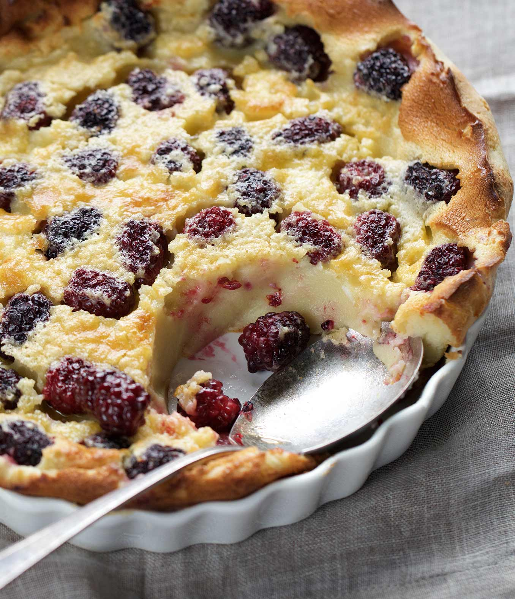

Blackberry Clafoutis
Home

Description
Clafoutis is one of my favorite French desserts because it takes only 10 minutes to prepare and is super versatile. I tried it with blackberries the other day and loved the result!
This was entirely stolen from allrepcipes.com btw
Ingredients
- 1 teaspoon butter
- 6 ounce fresh blackberries
- 7/8 cup milk
- 2 eggs
- 3/4 cup all-purpose flour
- 7 tablespoons of white sugar
- 1 pinch of salt to taste
- 1 tablespoon of brown sugar to taste
Steps
- Preheat oven to 375 degrees F. Grease a 9-inch baking dish with butter.
- Add blackberries to prepared baking dish.
- Stir milk and eggs in a bowl. Whisk in flour, sugar, and salt and mix until batter is smooth. Pour batter over blackberries.
- Bake in preheated oven on middle rack until eggs start to set, about 25 minutes. Sprinke brown sugar on top and bake until golden brown, about 20 more minutes.